Projects
Each project demonstrates engineering workflow: requirements → design → validation → manufacturability.
Gravity Light – Design & Validation of a Sustainable Energy Device
Designed and validated a gravity-powered lighting system converting gravitational potential energy into electrical output using a compound planetary gear train and DC motor generator.
Mechanical Design Planetary Gear Train Additive Manufacturing Autodesk InventorDesign Overview (Drawing → CAD → Prototype → Test)
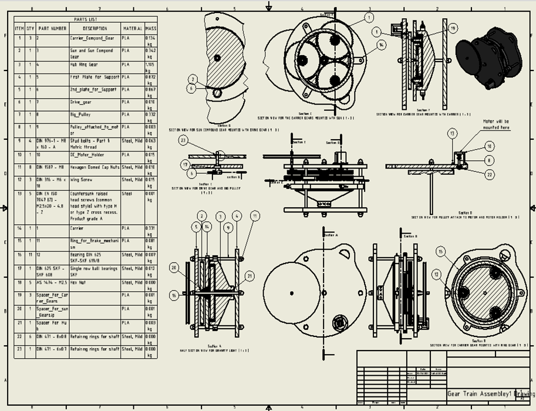
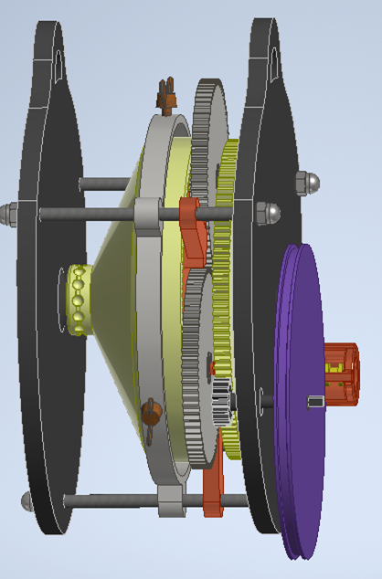
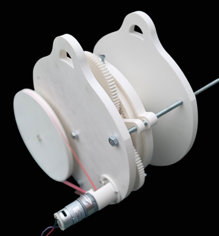
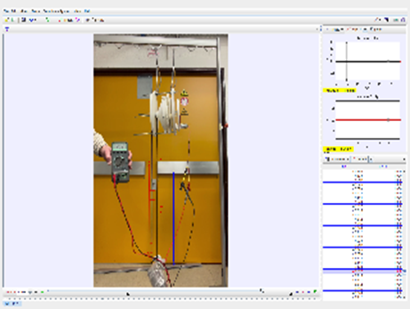
Key Outcomes
- Achieved ~2700:1 gear ratio for speed amplification.
- Validated PLA gear strength using Lewis bending stress.
- Demonstrated gravity-driven LED illumination.
- Identified transmission losses and proposed improvements.
20 kN Single-Column Screw Press – Design & Structural Validation
Designed a compact single-column screw press with focus on casting feasibility, machining features, load transfer, and static structural validation.
Machine Design Casting & Machining Static FEA Fusion 360Design to Validation Workflow
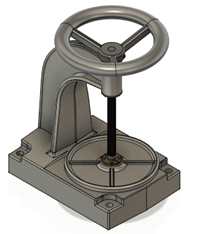
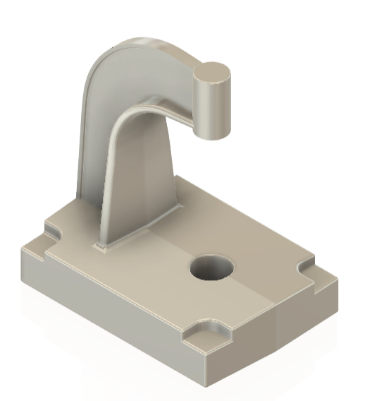
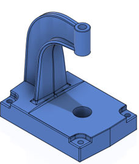
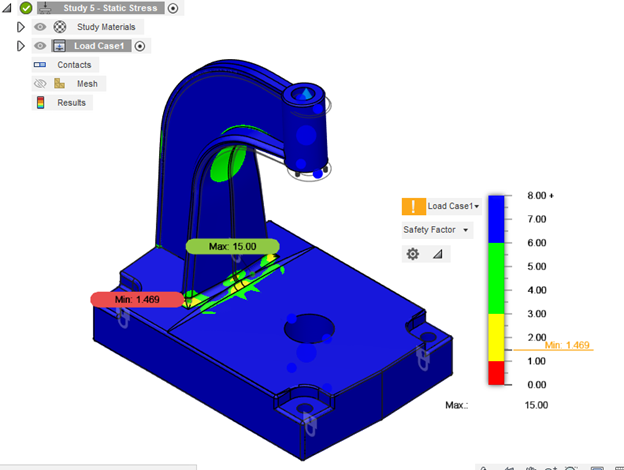
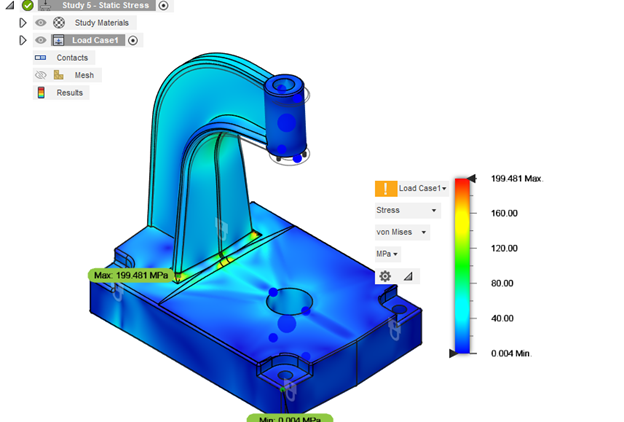
Key Outcomes
- Designed casting-ready geometry with proper fillets and thickness.
- Validated structural safety (min safety factor ≈ 1.47).
- Optimized stress concentration zones.
Topology Optimization – Bell Crank (Additive Manufacturing)
Performed topology optimization inside a fixed design space to reduce mass while maintaining stiffness, then converted the mesh output into a manufacturable CAD model.
Topology Optimization Design for AM FEA Validation Fusion 360Workflow (Design Space → Mesh → Final CAD → FEA)
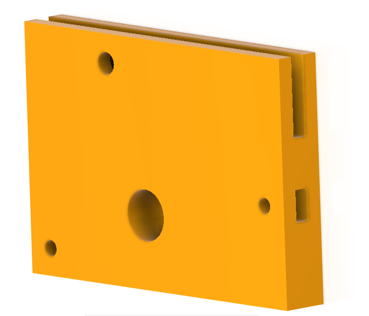
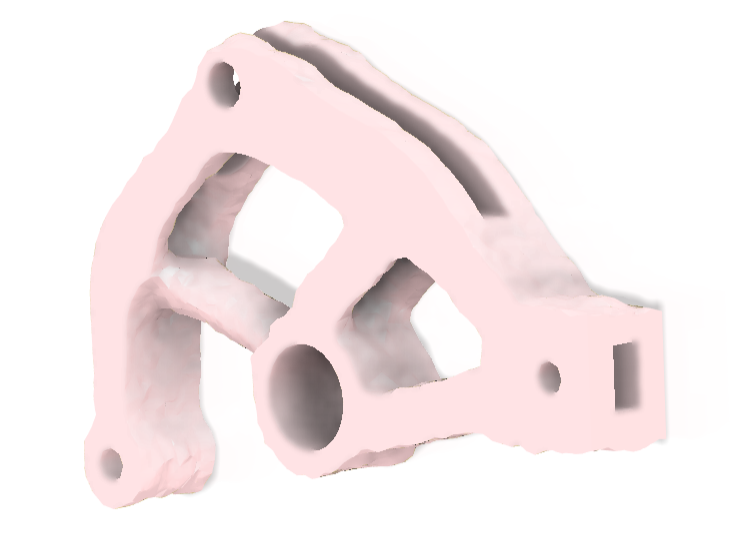
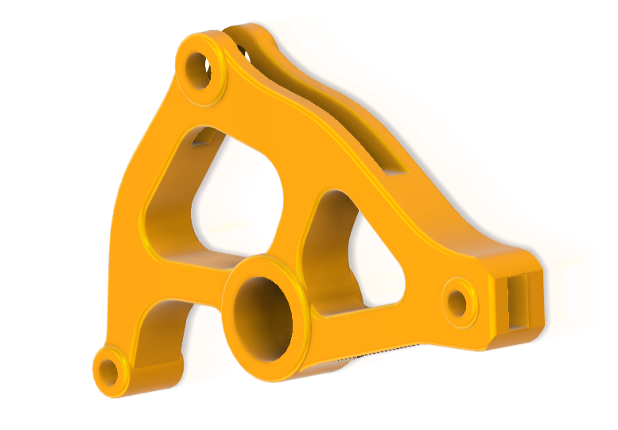
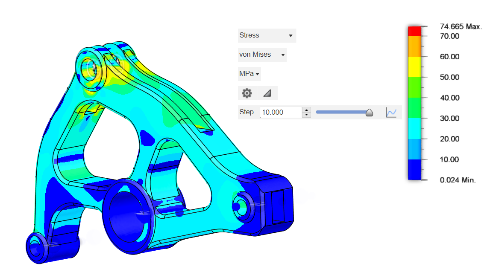
Key Outcomes
- Removed non-critical material while preserving functional interfaces.
- Rebuilt optimized geometry as smooth parametric CAD.
- Validated stress distribution under load.
Reverse Engineering – Connecting Rod Cap (Scan → CAD → Drawing)
Reconstructed a connecting rod cap using scanned data acquisition, rebuilt functional geometry in CAD, and produced a dimensioned manufacturing drawing.
Reverse Engineering CAD Reconstruction Engineering Drawing Autodesk InventorWorkflow (Scan → Final CAD → Drawing)
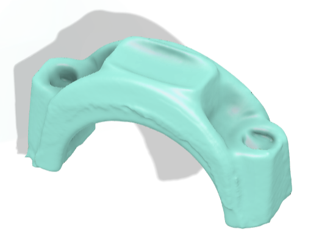
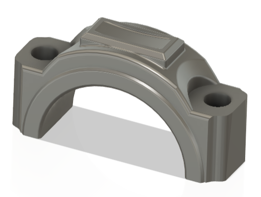
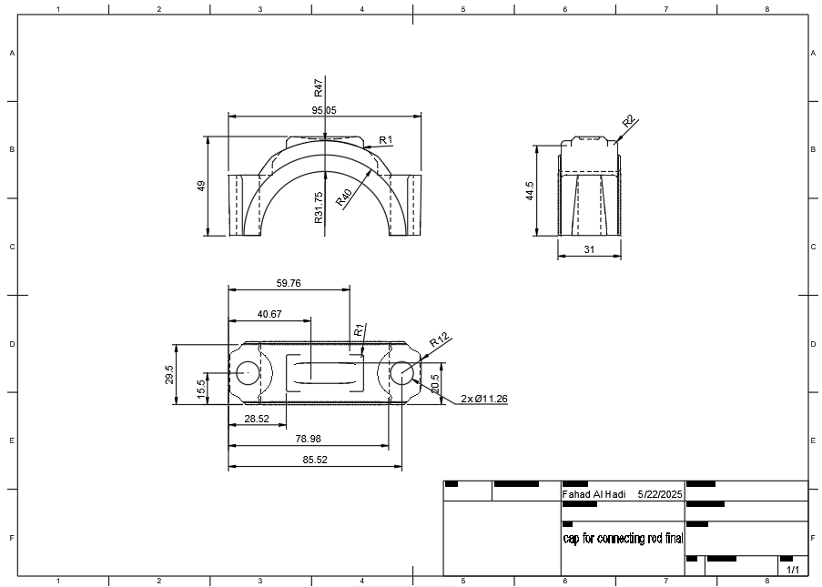
Key Outcomes
- Converted scan data into parametric CAD geometry.
- Reconstructed bolt interfaces and seating surfaces.
- Generated manufacturing drawing with full dimensions.
Contact
Email: fahadalhadi283055@gmail.com
Phone: (+352) 661 596 121
LinkedIn: fahad-al-hadi-99b735118
Location: Differdange, Luxembourg